Soru 1Cevap: E
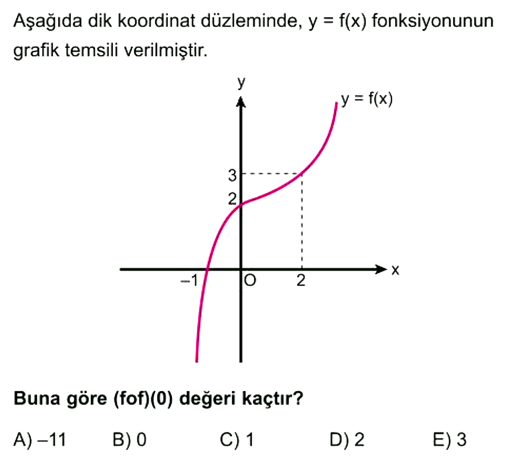
Çözüm
- Grafikten $f(0)=2$.
- Grafikten $f(2)=3$.
- $(f\circ f)(0)=3$ (E).
Cevap: E
Soru 2Cevap: D
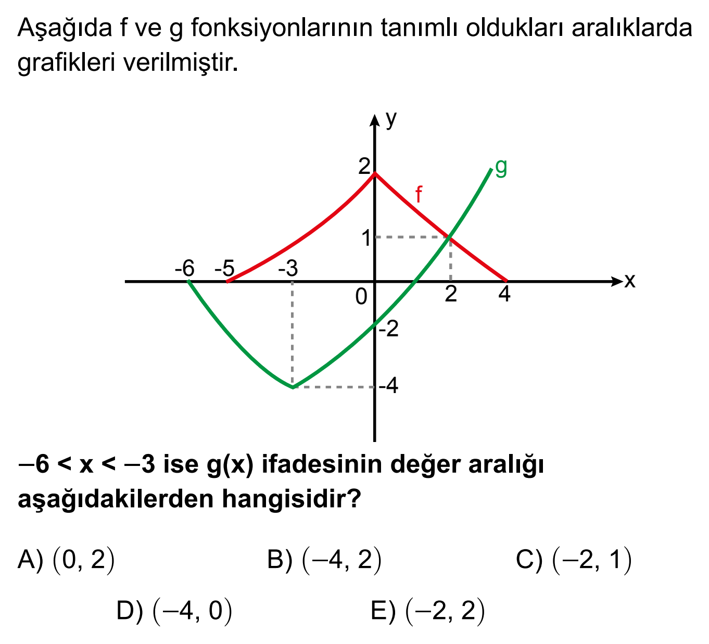
Çözüm
- $g$ grafiği $(-6,0)$'dan $(-3,-4)$'e azalarak iner.
- $-6\lt x\lt-3$ için uç değerler alınmaz.
- $g(x)\in(-4,0)$ (D).
Cevap: D
Soru 3Cevap: D
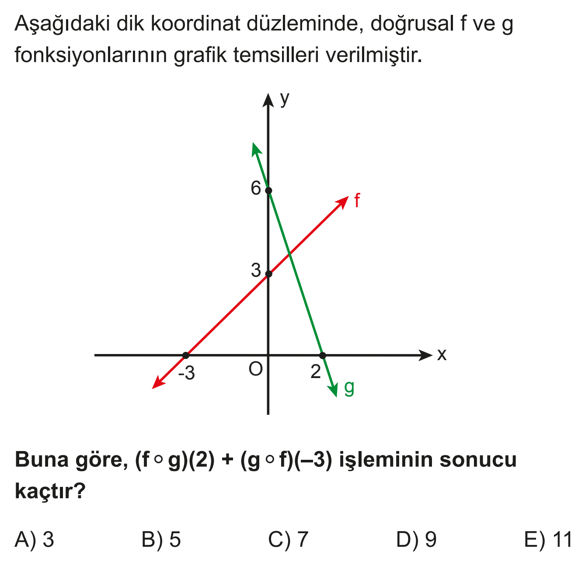
Çözüm
- $f$ doğrusu $(-3,0)$ ve $(0,3)$'ten geçer: $f(x)=x+3$.
- $g$ doğrusu $(0,6)$ ve $(2,0)$'dan geçer: $g(2)=0$, $f(-3)=0$.
- $(f\circ g)(2)=f(0)=3$, $(g\circ f)(-3)=g(0)=6$; toplam $9$ (D).
Cevap: D
Soru 4Cevap: B
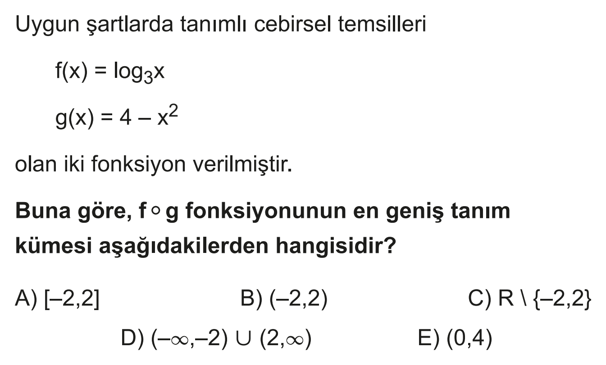
Çözüm
- $(f\circ g)(x)=\log_3(4-x^2)$.
- Logaritma için $4-x^2\gt0$.
- $-2\lt x\lt2$: $(-2,2)$ (B).
Cevap: B
Soru 5Cevap: D
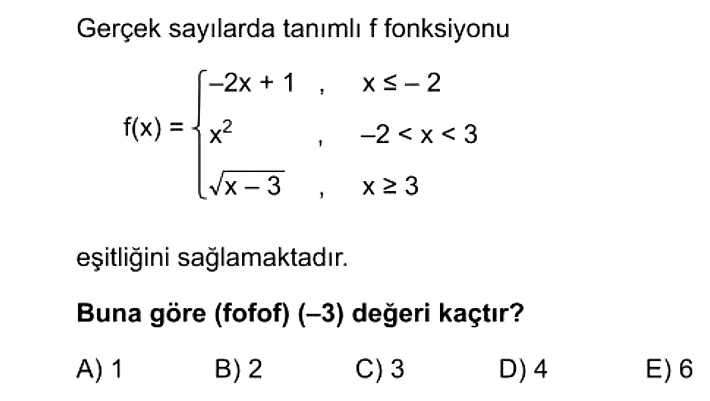
Çözüm
- $-3\le-2$: $f(-3)=7$.
- $7\ge3$: $f(7)=\sqrt4=2$.
- $-2\lt2\lt3$: $f(2)=4$ (D).
Cevap: D
Soru 6Cevap: B
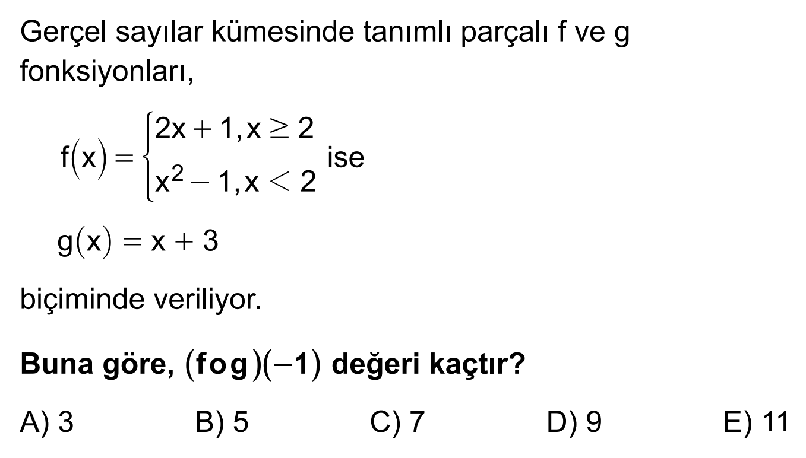
Çözüm
- $g(-1)=2$.
- $2\ge2$: $f(2)=2\cdot2+1$.
- $(f\circ g)(-1)=5$ (B).
Cevap: B
Soru 7Cevap: B
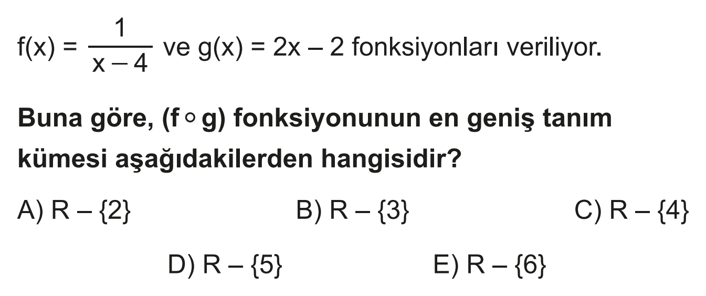
Çözüm
- $(f\circ g)(x)=\dfrac{1}{g(x)-4}=\dfrac{1}{2x-6}$.
- Payda sıfır olamaz: $2x-6\ne0\Rightarrow x\ne3$.
- Tanım kümesi $\mathbb R-\{3\}$ (B).
Cevap: B
Soru 8Cevap: B
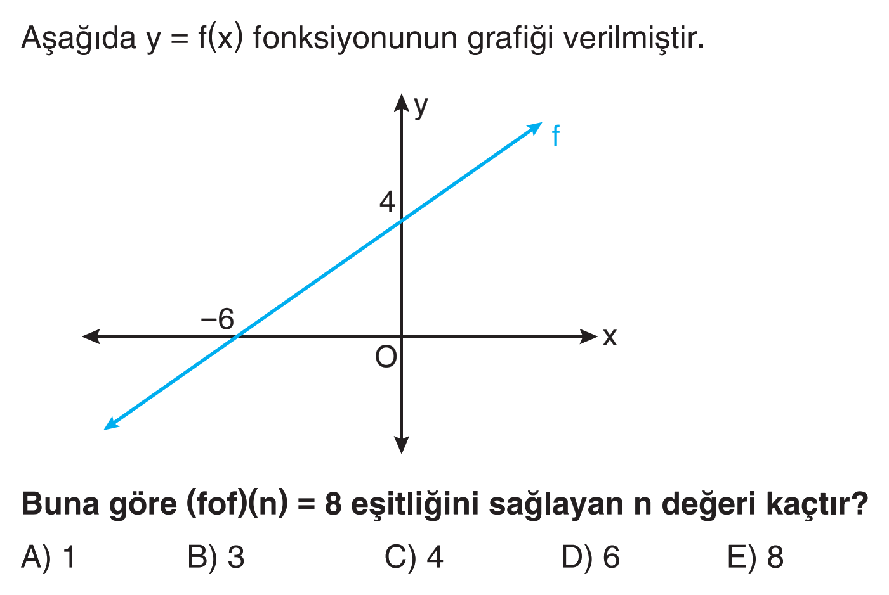
Çözüm
- $f$ doğrusu $(-6,0)$ ve $(0,4)$'ten: $f(x)=\dfrac23x+4$.
- $f(f(n))=8\Rightarrow f(n)=6$ ($f(6)=8$).
- $\dfrac23n+4=6\Rightarrow n=3$ (B).
Cevap: B
Soru 9Cevap: D
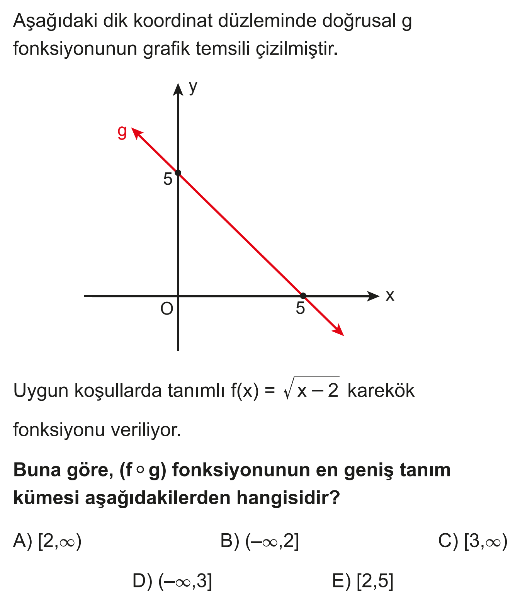
Çözüm
- $g$ doğrusu $(0,5)$ ve $(5,0)$'dan geçer: $g(x)=5-x$.
- $(f\circ g)(x)=\sqrt{5-x-2}=\sqrt{3-x}$.
- $3-x\ge0\Rightarrow x\le3$: $(-\infty,3]$ (D).
Cevap: D
Soru 10Cevap: A
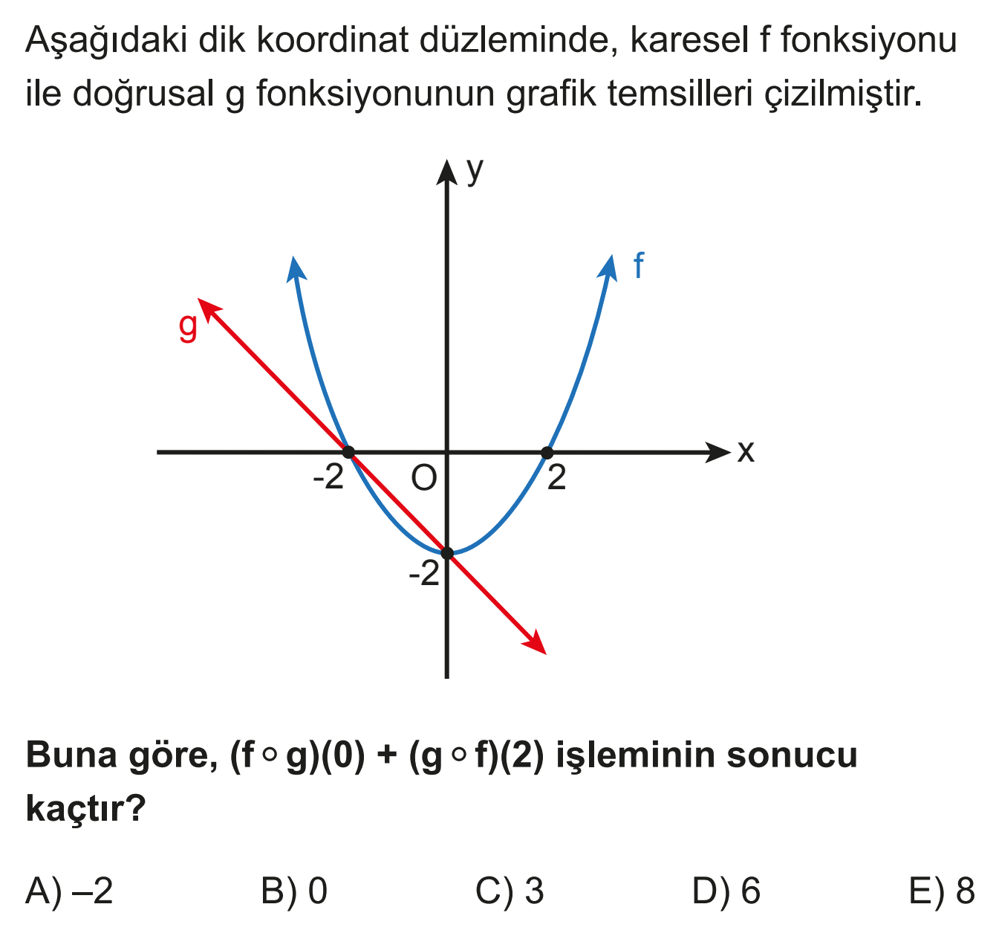
Çözüm
- Grafikten $g(0)=-2$ ve $f(-2)=0$: $(f\circ g)(0)=0$.
- $f(2)=0$ ve $g(0)=-2$: $(g\circ f)(2)=-2$.
- Toplam $0+(-2)=-2$ (A).
Cevap: A
Soru 11Cevap: C
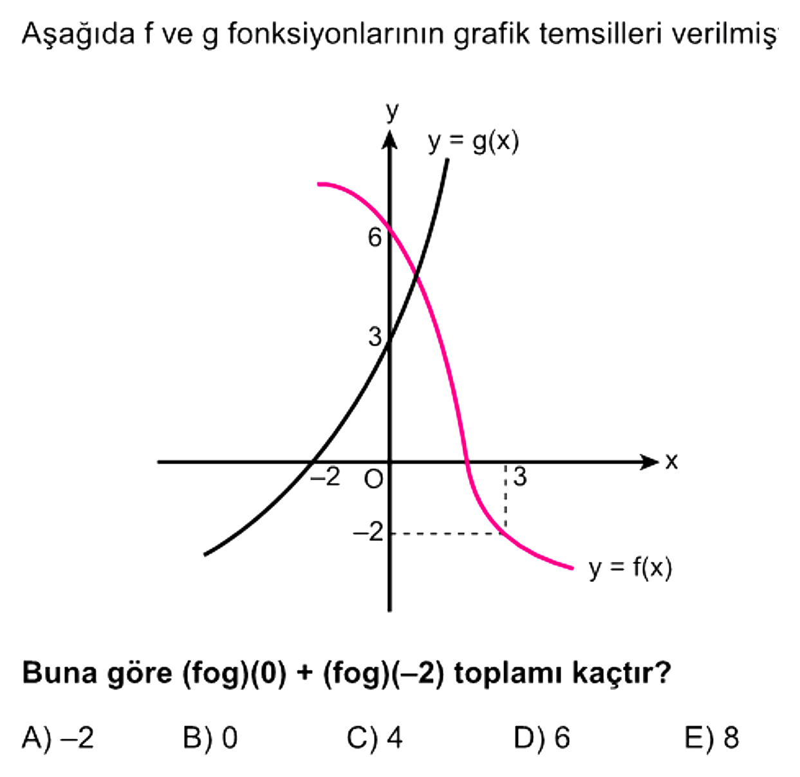
Çözüm
- $g$ doğrusu $(-2,0)$ ve $(0,3)$'ten geçer: $g(0)=3$, $g(-2)=0$.
- Grafikten $f(3)=-2$ ve $f(0)=6$.
- $(f\circ g)(0)+(f\circ g)(-2)=-2+6=4$ (C).
Cevap: C
Soru 12Cevap: E
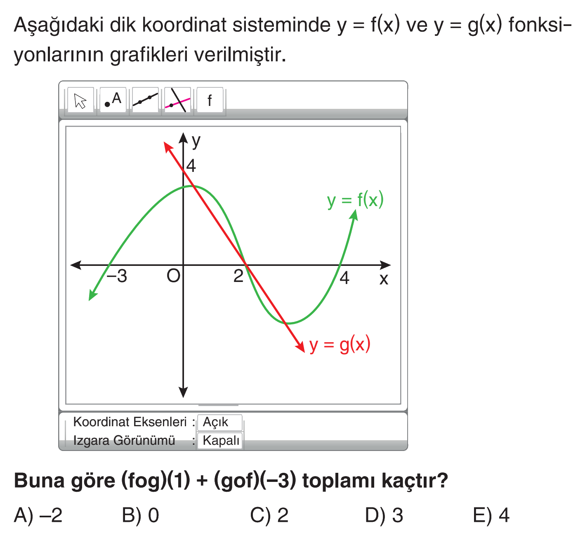
Çözüm
- $g$ doğrusu $(0,4)$ ve $(2,0)$'dan geçer: $g(1)=2$, $g(0)=4$.
- $f$ grafiği $x$ eksenini $-3$, $2$ ve $4$'te keser: $(f\circ g)(1)=f(2)=0$.
- $(g\circ f)(-3)=g(0)=4$; toplam $4$ (E).
Cevap: E
Soru 13Cevap: E
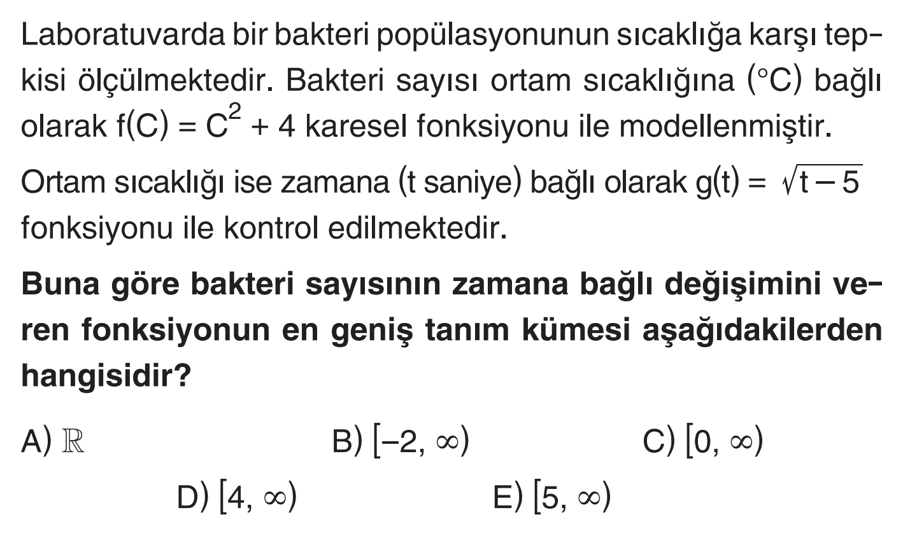
Çözüm
- $(f\circ g)(t)=(\sqrt{t-5})^2+4=t-1$.
- Kök tanımlı olmalı: $t-5\ge0$.
- En geniş tanım kümesi $[5,\infty)$ (E).
Cevap: E
Soru 14Cevap: C
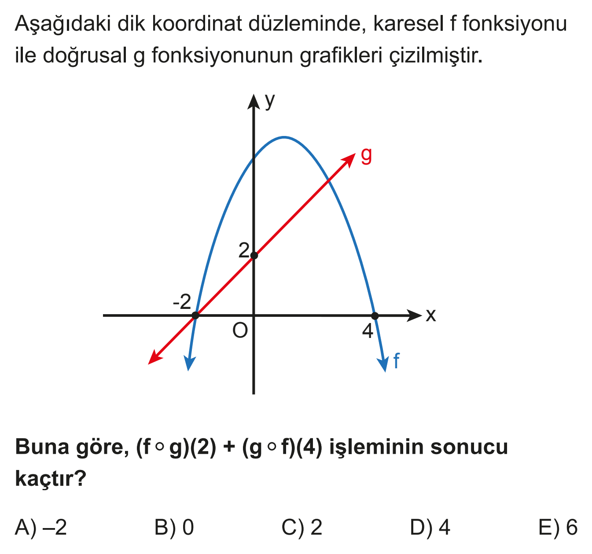
Çözüm
- $g$ doğrusu $(-2,0)$ ve $(0,2)$'den geçer: $g(x)=x+2$, $g(2)=4$.
- $f$'nin kökleri $-2$ ve $4$: $(f\circ g)(2)=f(4)=0$.
- $(g\circ f)(4)=g(0)=2$; toplam $2$ (C).
Cevap: C
Soru 15Cevap: A
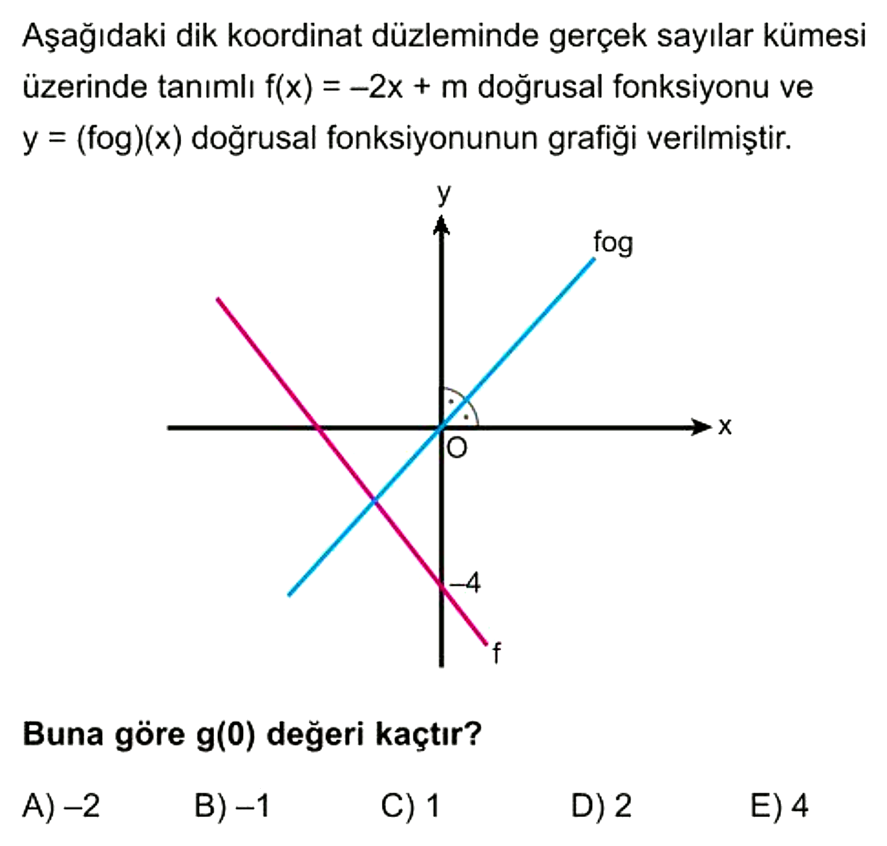
Çözüm
- $f$ doğrusu $y$ eksenini $-4$'te keser: $m=-4$, $f(x)=-2x-4$.
- $f\circ g$ orijinden geçer: $f(g(0))=0$.
- $-2g(0)-4=0\Rightarrow g(0)=-2$ (A).
Cevap: A
Soru 16Cevap: E
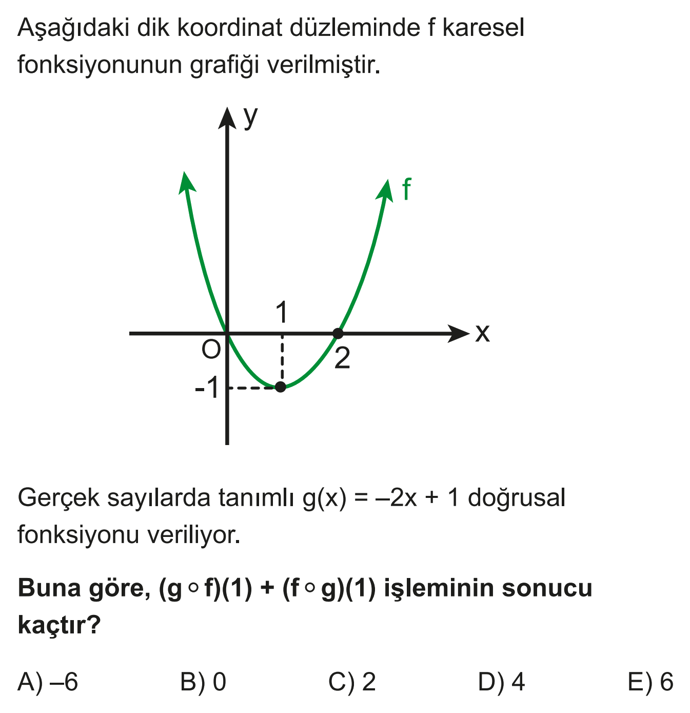
Çözüm
- Kökler $0$ ve $2$, tepe $(1,-1)$: $f(x)=x^2-2x$.
- $(g\circ f)(1)=g(-1)=3$.
- $(f\circ g)(1)=f(-1)=3$; toplam $6$ (E).
Cevap: E
Soru 17Cevap: D
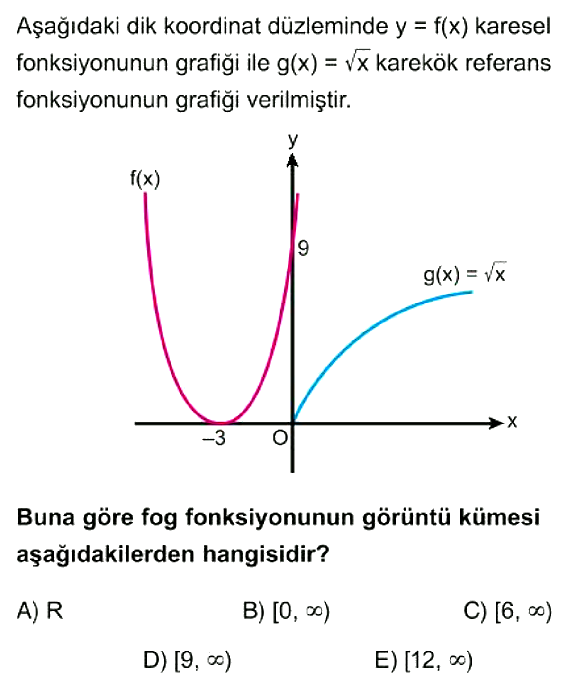
Çözüm
- Grafikten $f(x)=(x+3)^2$ ($f(0)=9$, tepe $-3$).
- $(f\circ g)(x)=(\sqrt x+3)^2$, $\sqrt x\ge0$.
- En küçük değer $x=0$'da $9$: $[9,\infty)$ (D).
Cevap: D
Soru 18Cevap: E
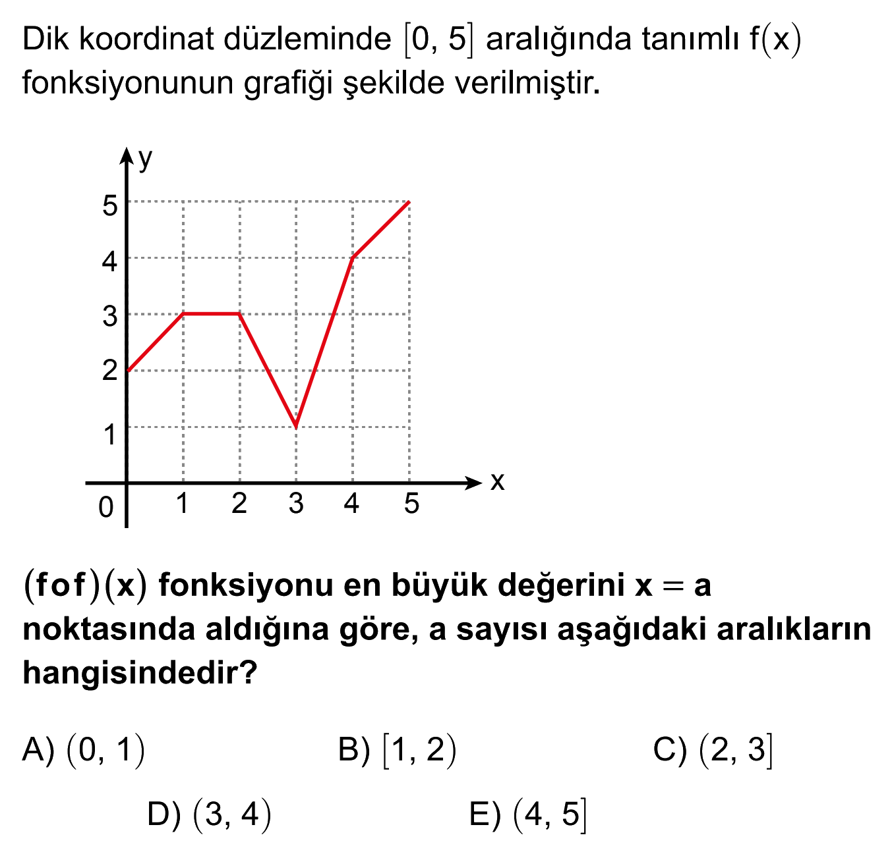
Çözüm
- Grafikte $f$'nin en büyük değeri $5$, yalnızca $x=5$'te alınır.
- $f(f(a))=5$ için $f(a)=5$ olmalı.
- $f(a)=5$ yalnız $a=5$'te: $a\in(4,5]$ (E).
Cevap: E
Soru 19Cevap: B
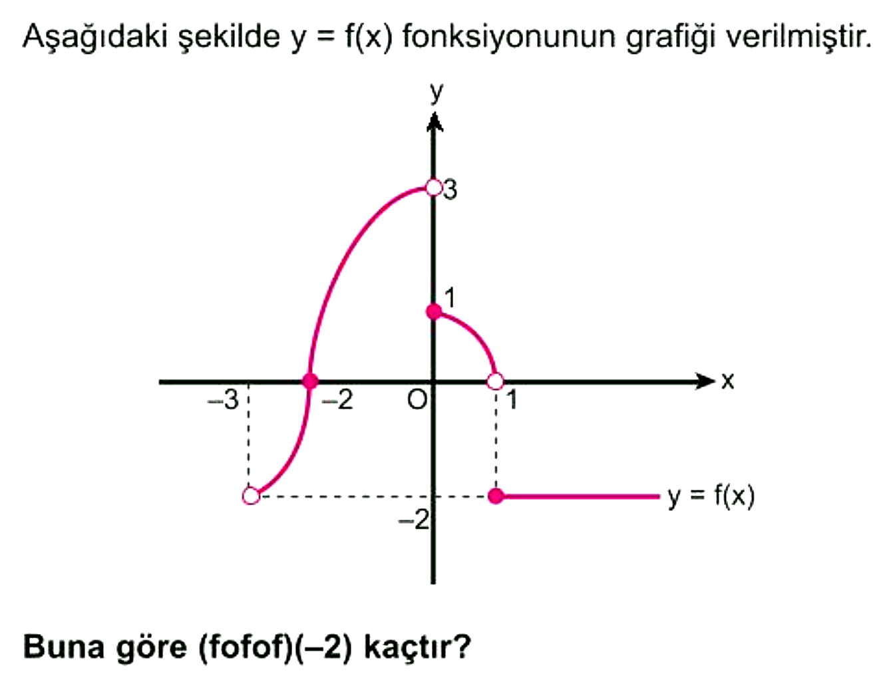
A)$-3$B)$-2$C)$0$D)$1$E)$3$
Çözüm
- Grafikten $f(-2)=0$.
- $f(0)=1$.
- $f(1)=-2$: $(f\circ f\circ f)(-2)=-2$ (B).
Cevap: B
Soru 20Cevap: A
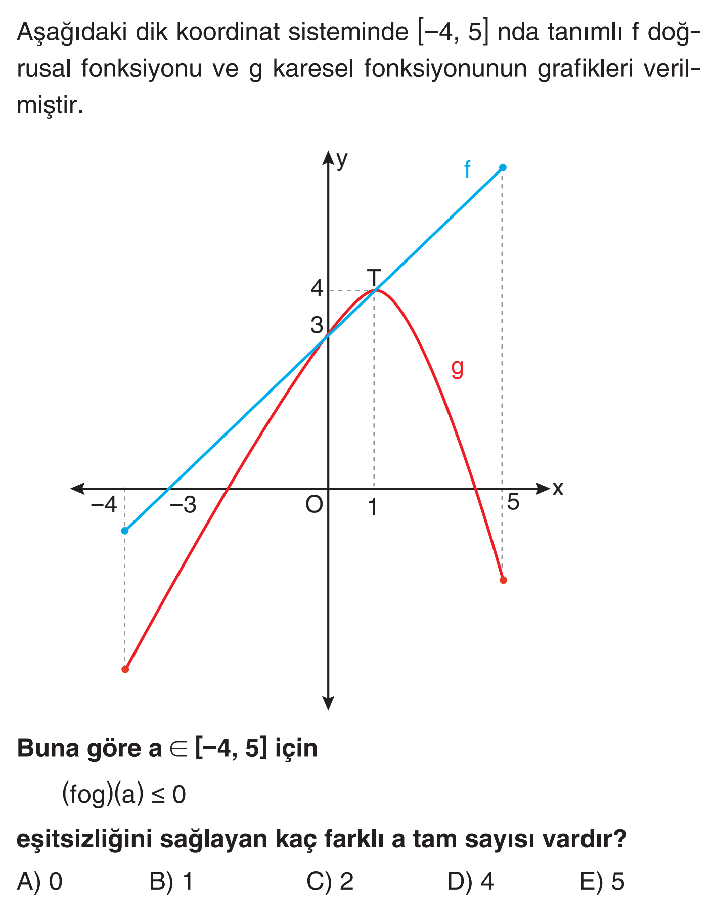
Çözüm
- $f(x)=x+3$ ($[-4,5]$'te), $g(x)=-(x-1)^2+4$; $f(g(a))\le0\iff g(a)\le-3$.
- Ayrıca $g(a)$, $f$'nin tanım kümesi $[-4,5]$'te olmalı: $-4\le g(a)\le-3$.
- $a^2-2a-6\ge0$ ve $a^2-2a-7\le0$ birlikte tam sayı vermez: $0$ (A).
Cevap: A
Soru 21Cevap: E
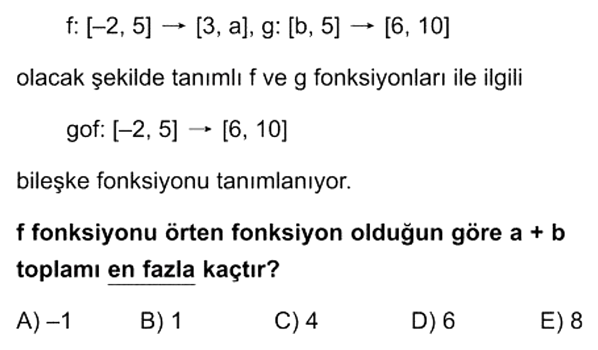
Çözüm
- $g\circ f$ $[-2,5]$'te tanımlı: $f$'nin görüntüsü $[3,a]$, $g$'nin tanım kümesi $[b,5]$'in içinde olmalı.
- $b\le3$ ve $a\le5$.
- $a+b$ en fazla $5+3=8$ (E).
Cevap: E
Soru 22Cevap: D
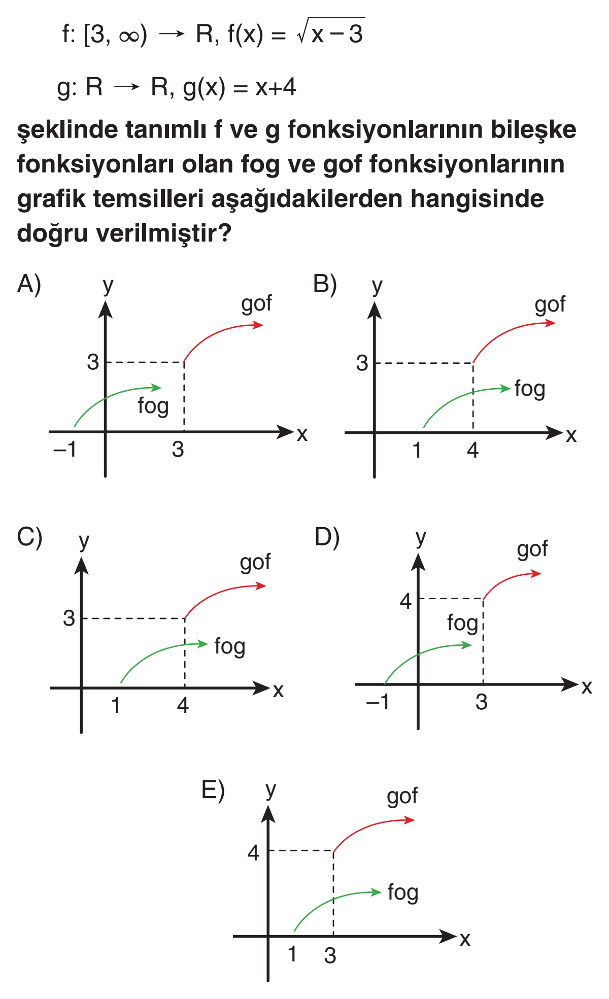
Çözüm
- $(g\circ f)(x)=\sqrt{x-3}+4$, $x\ge3$: grafik $(3,4)$'ten başlar.
- $(f\circ g)(x)=\sqrt{x+1}$, $x\ge-1$: grafik $(-1,0)$'dan başlar.
- Bu iki başlangıç noktasını gösteren grafik D'dir.
Cevap: D
Soru 23Cevap: C
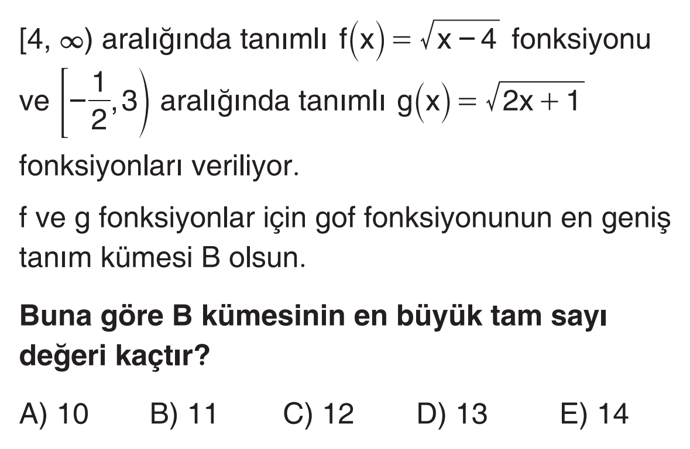
Çözüm
- $g\circ f$ için $x\ge4$ ve $f(x)\in\left[-\dfrac12,3\right)$ olmalı.
- $\sqrt{x-4}\lt3\Rightarrow x\lt13$; $B=[4,13)$.
- En büyük tam sayı $12$ (C).
Cevap: C
Soru 24Cevap: E
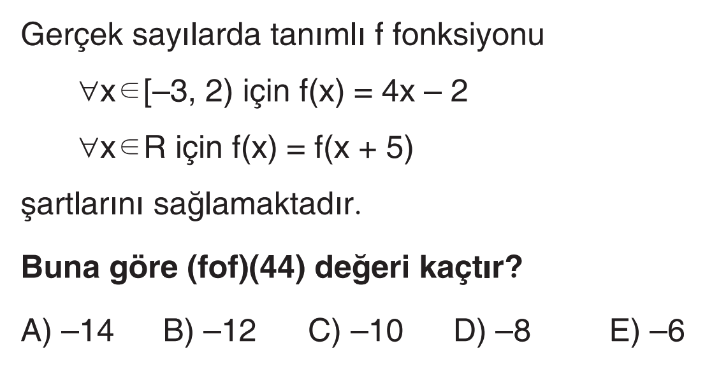
Çözüm
- $f(x)=f(x+5)$: $f$ her $5$ birimde tekrar eder; $f(44)=f(-1)=4(-1)-2=-6$.
- $f(-6)=f(-1)$.
- $=-6$ (E).
Cevap: E